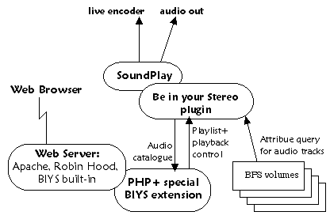

Developing a skin for Be in your Stereo is a bit more complex, and a lot
more satisfying, than creating a skin for something like, say, WinAMP. In
most applications, the skin is just a pretty bitmap, plus some fonts, and
a few "hot spots" for the end-user to click on.
In contrast, Be in your Stereo lets you control all aspects of the presentation,
within the limits of what your web browser can do. Each "skin" is
actually a complete reworking of the function and presentation.

The diagram on the right describes the architecture of Be in your
Stereo, and illustrates how the various bits relate:
- Web browser from the Net makes a connection to a web server on the machine, which is
also running SoundPlay and the BIYS plugin. The web server
could be a stand-alone web server like Apache or Robin Hood, or the web server
built into the SoundPlay plugin.
- The web server summons PHP to grind out a web page.
- The PHP page may contain calls out to the SoundPlay plugin. The plugin has two
roles: (a) deliver requests to SoundPlay - for instance to change the
volume or switch to a different track, and (b) answer questions about
the audio file collection on the system's hard drives.
API concepts
Playlist
SoundPlay can have serveral audio players going at once,
generally referred to as "playlists". In the PHP
API, the "int playlist" that is nearly everywhere is a number between zero and
the number of playlists that are in place (minus one). The first playlist is playlist
0. The next one is playlist 1.
Boundary conditions:
- It's possible for there to be no playlists.
- Referring to a playlist number not in [0 .. #playlists-1] doesn't make sense,
but BIYS will try to do something sensible with it by creating a new playlist (if there
are none) or using the first one.
Index
The Index refers to how far down in the playlist a file is. The index
is like a pointer to a slot in the playlist. The index starts at zero and counts
up to the number of entries in the playlist (minus one). A ten-entry playlist
has entries with index=0 through index=9.
Boundary conditions:
- Playlists can be empty, i.e. there is not necessarily a file with index = 0.
- Referring to an index not in [0 .. #slots-1] doesn't make sense,
and can potentially make SoundPlay quite unhappy.
In general, IDs are better suited for referring to audio tracks than Indices.
IDs
The ID is an exact identifier for a particular audio file, no matter
which slot it's in. It's more or less a big random integer. Unfortunately,
IDs change each time you start SoundPlay, and referring to an ID that
no longer exists can cause unpleasant things, including crashes.
Path and Name
Every file has two human-readable titles: the path is the
full file system path (or URL if it's a Shoutcast URL) for the audio file.
The name starts off being the audio file's filename but can be changed
easily through the PHP API.
The name is what shows up in the SoundPlay user interface, and is used when
sorting files.
For instance, a file can have the path "http://216.32.166.90:10154/"
and the name "BeOS Radio".
next: crash course on PHP